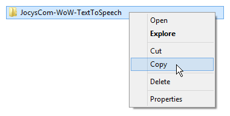
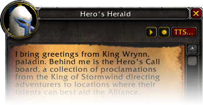

Jocys.Com World of Warcraft Text to Speech Addon
When you open NPC dialogue window in “World of Warcraft” game, Jocys.Com WoW Text to Speech Addon creates and sends special whisper message to yourself (message includes dialogue text, voice name, pitch value and effect name). Then, Jocys.Com WoW Text to Speech Monitor (which must be running in background) picks-up this message from your network traffic and reads it with text-to-speech voice. You can use free text-to-speech voices by Microsoft or you can download and install additional and better text-to-speech voices from Ivona.com website. Good voices are English-British “Amy” and “Brian”. English-American “Salli” and “Joey” are not bad too.
Addon and Monitor are tested on Windows 8.1 Pro only
code.google.com/p/JocysCom_Wow_TTS
1. Download and open JocysCom-WoW-TextToSpeech.zip file with “File Explorer”.
2. Copy JocysCom-WoW-TextToSpeech folder ( folder is inside zip file ).

3. Paste JocysCom-WoW-TextToSpeech folder inside “AddOns” folder of WoW.
Usual directory: C:\Program Files\World of Warcraft\Interface\AddOns\
4. Install text to speech voices, if needed.
Recommended: You can use free text-to-speech voices by Microsoft or you can download and install additional and better text to speech voices from Ivona.com website. Good voices are English-British “Amy” and “Brian". English-American “Salli” and “Joey” are not bad too. Ivona.com text-to-speech voices are not free and cost about $45 each. You can use them for free during trial period for 1 month only. If you know good text-to-speech voices as good, as voices by Ivona.com, which people could install and use for free, please write us. We will replace default voices for add-on to recommended free versions.
5. Run JocysCom.WoW.TextToSpeech.Monitor.exe file ( file is inside pasted folder ).
Usual directory:
C:\Program Files\World of Warcraft\Interface\AddOns\JocysCom-WoW-TextToSpeech\
Recommended: You can pin “Monitor” to Windows OS taskbar, if you plan to use it frequently.

6. Run World of Warcraft.
7. Quest Window in WoW will have [Options] button now. Click it.

8. Write names of text to speech voices, you have installed and want to use.
Fields will be filled with default values already.
Notes
Auto “Do not disturb" - enables “Do not disturb” status and shows <Busy> near name (over character), when dialog window is open.
You can move frames, when “Options” window is open.
You can replace your name in name field. For example: from Maximus to Optimus.
You can copy quest text with CTRL+C if addon is enabled and quest window is open.
Message for Blizzard about possible improvements
Getting UnitRace("") for NPC... in order to apply sound effect on voice of each race.
Sound effects on NPCs are applied by UnitCreatureType("") now.
Getting UnitAge("") for NPC... in order to apply “Child", “Adult”, “Senior” sound effect.
Getting value if NPC has voice over for all text... in order not to start TTS speech.
NPC “talking” animation should loop depending on length of the text.